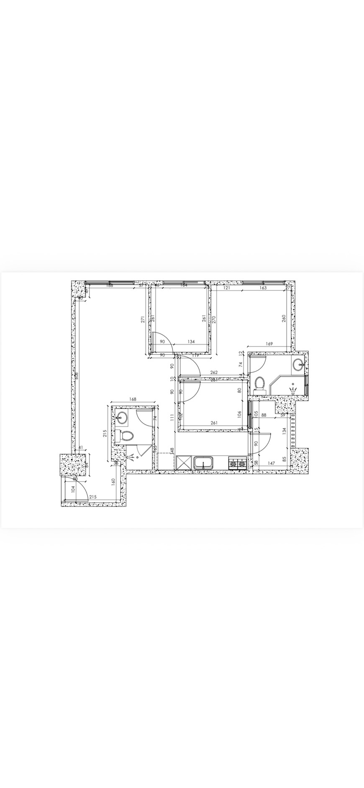
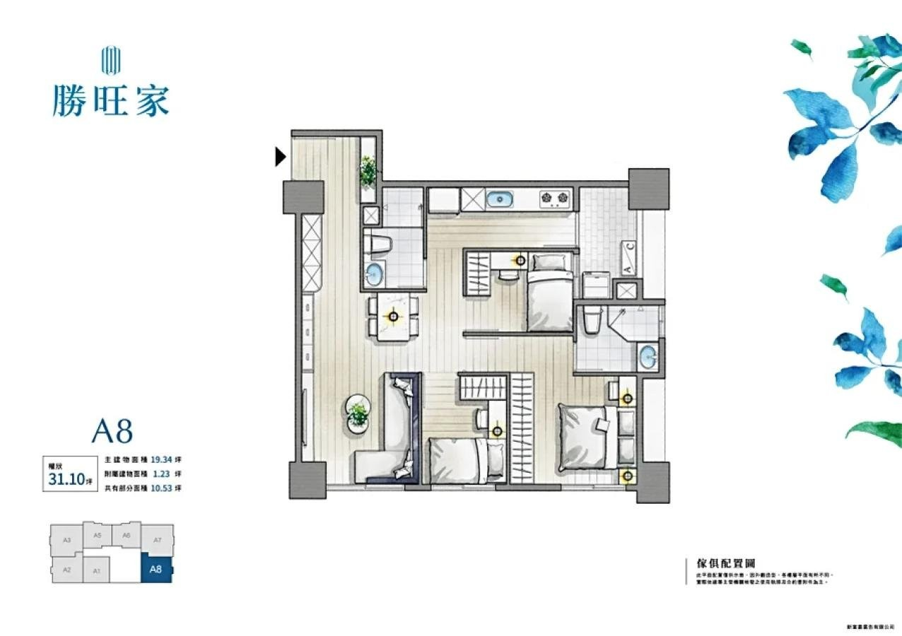

此模型依點陣圖描繪，採用圖上可辨識的 224、262、261 cm 等尺寸校準。未閉合的尺寸鏈、牆厚及轉角仍屬估計；A8 僅作家具配置參考。
窗寬核對：客廳 188 cm、臥室 A 164 cm、主臥 163 cm、臥室 B 朝陽台 106 cm；衛浴 B 約 72 cm，位置依點陣圖估計。窗高與窗台高仍為假設。工作陽台外緣以開放欄杆示意；依圖補回右上、右下實牆塊與衛浴 A 左側階梯狀牆體，其未標注深度仍依圖估計。廚衛設備依 A7 平面圖調整；兩間衛浴辨識為淋浴乾濕分離，未辨識到浴缸。梁的位置與尺寸未知：示意梁預設寬 25 cm、下垂 30 cm，僅用於呈現空間感。家具尺寸、門片轉向、窗簾及燈具均為假設。室內光線為視覺模擬，非實測日照。
編輯器會提示外框重疊與門片／抽屜操作干涉；提示不能代替現場丈量。配置只保存在這個瀏覽器，請匯出備份。


保存家具配置、尺寸與材質。方案儲存在目前瀏覽器。
目前工作配置將重設，已保存的方案仍會保留，也可以使用復原。